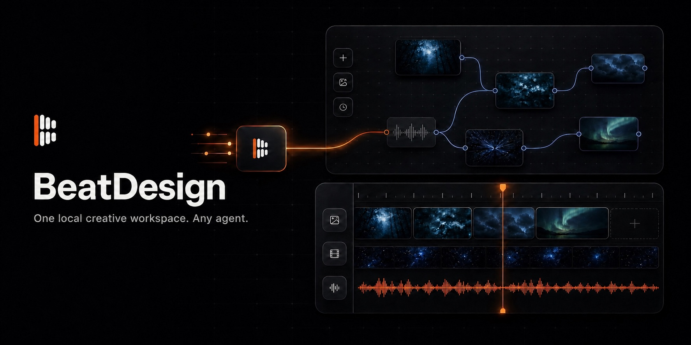

Threads｜BeatDesign：開源、本地優先的 AI 影片工作台，讓 MCP Agent 直接操作 Canvas 與時間線

一句話摘要
BeatDesign 想把「構想 → 生成 → 整理素材 → 剪輯 → 匯出」留在一個可自管、可延伸的本機專案裡；它不內建一個聊天 agent，而是以 MCP 讓你慣用的 Claude Code、Codex、Cursor 等 agent 操作同一個 Canvas、Assets 與 Editor。
Threads 貼文說了什麼
BeatAPI 創辦人 Eric Kang（@beatapi_io）將 BeatDesign 描述為 Higgsfield 類 AI 影片工作台的開源、本地版替代方案：Studio、無限畫布、素材庫與時間線剪輯放在同一個電腦專案，從提示詞與分叉構想一路做到 MP4；他也提到 29 個 MCP 工具可供 Claude Code、Codex 直接操作，並稱本地工作台免費、遠端生成才按用量計費。
這些主張以下以 BeatDesign 官方 GitHub README、MCP 文件與產品狀態文件交叉核對，而非直接把貼文宣傳語當作功能保證。
官方查核：它實際是什麼
GitHub 將 BeatDesign 定位為 **local-first 的 AI 圖片／影片創作工作台**，使用 Apache-2.0 授權開源。它的核心工作流是：
```text
提示詞或本機媒體
→ Infinite Canvas：連接、分叉、比較、保留脈絡
→ Shared Assets：圖片、影片、音訊與生成成果共用
→ Video Editor：修剪、編排、字幕、預覽、匯出 MP4
↕
MCP Agent：對同一個本機 Project 進行操作
```
README 與產品狀態文件確認目前包括：
- **Studio、Canvas、Assets、Editor 同一份 Project**：本機匯入或生成的素材能在各工作區重用，不會只困在單一生成頁面。
- **非破壞式時間線剪輯**：可處理影片、圖片 Overlay、音訊與 SRT 字幕；支援 trim、split、移動、淡入淡出、預覽與 H.264/AAC MP4 匯出。
- **本地優先資料模型**：專案、媒體、Canvas 狀態、時間線與生成歷程預設儲存在本機工作區／SQLite；挑選本機檔案不會自動上傳給 Provider。
- **Agent control plane**：官方列出 29 個本地 MCP tools，包含 Project、Asset、Canvas、Generation、Editor 等群組；可用 stdio 或 Streamable HTTP MCP 接給多種 host。
- **支援多種 coding agent**：README 列出 Claude Code、Codex、Cursor、OpenCode、VS Code + GitHub Copilot、Gemini CLI、Hermes Agent 等整合範本。
「開源免費」的正確理解
這是最需要拆開看的部分：
- **本地工作台與開源碼**：可自行 clone、檢視、修改與運行；本機匯入、安排、剪輯、預覽與匯出不需要 BeatAPI key。
- **遠端 AI 能力**：影像／影片生成、Standard／Deep 分析與 AI redo 是經由 BeatAPI Provider 的服務能力；README 明確寫到要在使用這些功能時加入自己的 BeatAPI API key。
- **計費與限制仍由 Provider 決定**：官方產品文件說明帳號併發、配額與計費不由 BeatDesign 這個開源 repo 重做；同一帳號的專案會共享 Provider 層限制。
因此，「沒有訂閱」不等於所有 AI 生成成本為零，更不代表可以在不讀 Provider 條款的情況下大量商用生成。
MCP 可以怎麼幫忙
BeatDesign 的設計不是讓 agent 只產生文字指令，而是讓 agent 對可見的創作專案進行結構化操作。舉例來說，可以要求 agent：
> 打開最新專案，把三段短片排進時間線、加上 Logo Overlay、調整字幕，最後保留 Editor 讓我檢查。
官方 MCP 文件提到這些寫入與瀏覽器 UI 使用同一個 Project、Asset、Command Kernel 與 SQLite 服務；agent 變更應能在工作台裡看見。這特別適合把「先由 agent 做粗剪／排版，最後由人做視覺判斷」變成可追溯的協作流程。
適合誰先試
- **短影音或課程內容製作者**：想將 prompt、參考圖、不同生成分支、成片素材與剪輯放在一起管理。
- **習慣 Claude Code／Codex 的創作者**：希望 agent 能直接幫忙整理素材、建立時間線、調字幕或匯出，而非只給你文字建議。
- **重視本機素材脈絡的人**：不想把每次生成與剪輯散落在多個雲端工具頁面，希望保有可檢查與可 fork 的專案結構。
試用前的限制與驗收邊界
- **它不是 Higgsfield 的完整等價品**：官方自己使用「alternative」定位；模型供應、雲端體驗、生成品質、協作功能與產品成熟度都需按實際需求比較。
- **不是免設定的桌面 App**：官方 quick start 要求 Node.js 22+、pnpm 10+ 與近期 Chrome，並以 `pnpm install`、`pnpm db:push`、`pnpm dev` 啟動本機服務。
- **MCP 的媒體操作有額外依賴**：瀏覽器 UI 的基本預覽／匯出可不依賴系統 FFmpeg；但 MCP／Node 的抽幀與權威時間線匯出需要 `ffmpeg`，後者也需要 `ffprobe`。
- **agent 協作仍有成熟度邊界**：官方產品狀態文件將即時 UI 事件、完整操作稽核、headless 背景媒體 worker、桌面封裝等列為尚未完成；目前 UI 是以 revision 輪詢顯示外部寫入，並非完整即時協作系統。
- **對付費動作保留人工關卡**：官方設計要求生成先在 Canvas 有可見卡片並檢查後才提交；仍建議實務上先讓 agent 做免費的素材整理與剪輯，再由人確認何時啟動可能付費的雲端生成。
最小可用試法
先不要讓 agent 直接大量生成。挑一個 15–30 秒、已有素材的短片專案：先本機匯入 3 段影片與一張 Logo，手動確認它們在 Assets 可見；再接 MCP，要求 agent 建一條時間線、加上 Logo 與 SRT 字幕，回到 Editor 檢查畫面和音訊後才匯出。這能快速驗證你最在意的是「素材／剪輯協作」還是「遠端生成能力」，也避免費用與提示詞試錯一開始就混在一起。
來源
- Threads：<https://www.threads.com/@beatapi_io/post/Des5BnWG3VX>
- 官方 GitHub README：<https://github.com/BeatAPI/BeatDesign>
- 官方網站：<https://design.beatapi.io>
- 官方產品狀態：<https://github.com/BeatAPI/BeatDesign/blob/main/docs/PRODUCT_PLAN_AND_STATUS.md>
- 官方 MCP 文件：<https://github.com/BeatAPI/BeatDesign/blob/main/docs/MCP.md>